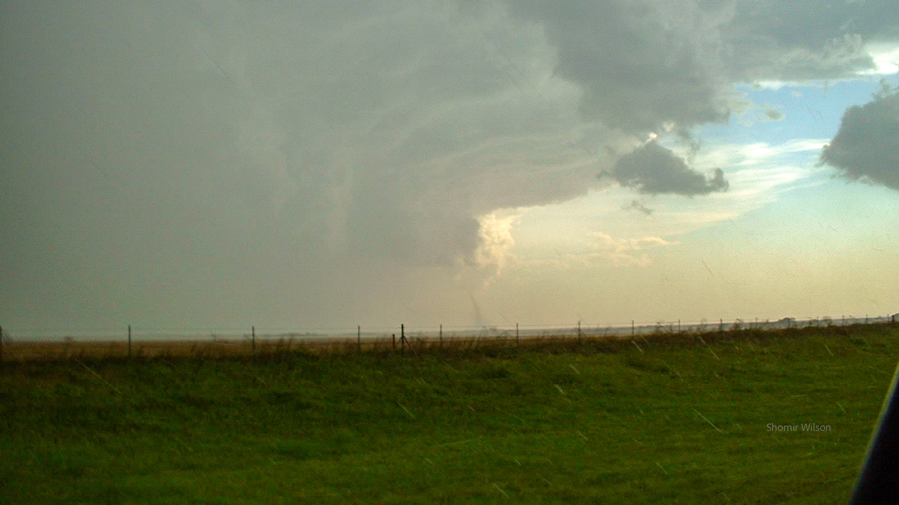
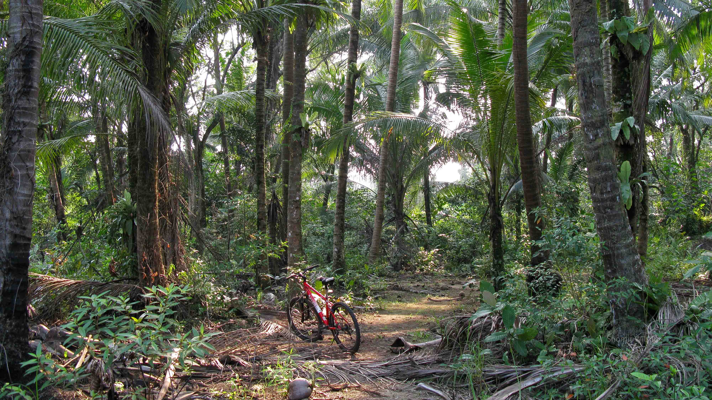
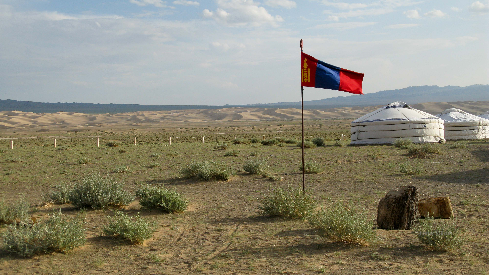
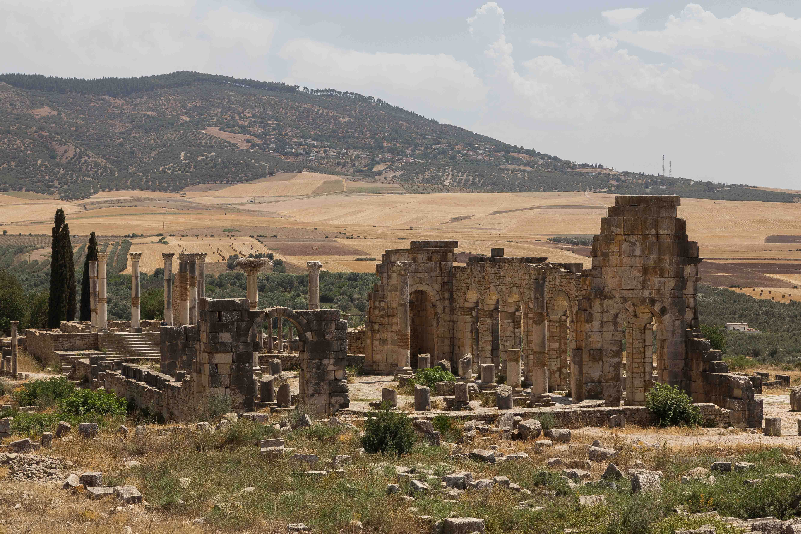
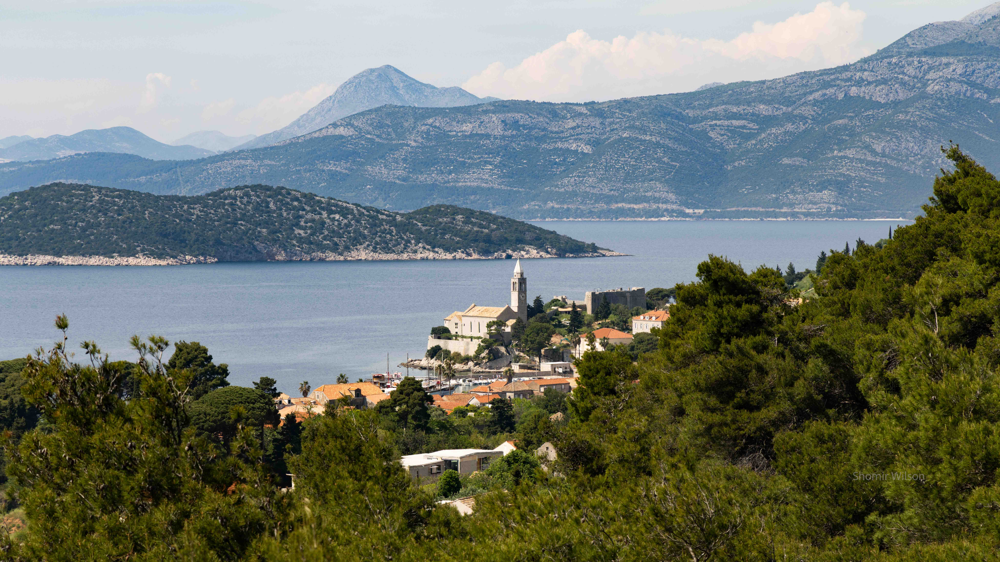

Travel and Meaning, Part 4:
Adventure
This page is part of Travel and Meaning and my advice pages.

June 10, 2005
Interstate 70 in Western Kansas
We were three recent college graduates on a cross-country road trip, from our parents' homes in the mid-Atlantic states to the Grand Canyon and back. We had driven north into Colorado prior to turning back east, which set us up for a long drive across Kansas that afternoon. The weather had been mostly serene on our trip, but that afternoon it had turned dark with cumulonimbus clouds. One that looked like a textbook illustration of a thunderstorm towered in front of us, and from my front passenger seat in the minivan, I pointed out the features: overshooting top, anvil, mammatus, and flanking line. As we drove under the long anvil, marble-sized hail began to fall. I turned on the radio and discovered a local radio station that had switched to uninterrupted coverage of the weather, listing several weather warnings in front of us and to our sides. My friend who was driving was excited, as was I; we enjoyed thunderstorms. My friend in the back seat was anxious, and she bristled at our enthusiasm.
I began paying closer attention to the road atlas when the radio mentioned tornadoes, including one that was distantly ahead of us near the interstate. I guessed it was an hour away, but I couldn’t be certain because the hail’s variations in intensity sometimes caused us to slow down or pull over to the shoulder for a few minutes. The interior of the minivan became almost uncomfortably loud with the sounds of impacts on the car body and the windshield. Barely audible above the din, we voiced concerns about damage to the minivan—it belonged to the parents of my friend in the backseat—though large trucks were blasting the hail at typical highway speeds. I looked at the slate gray rain shield in front of us, indistinguishable from the cloud base, and wondered if it was hiding the tornado.
When the radio announced a funnel cloud near a town named WaKeeney, I saw on the road atlas that it was about five miles behind us in a five o’clock direction. It was moving away from us. Surely I wouldn’t be able to see it, I thought, but I felt obligated to look. I was mistaken: over my backseat friend’s shoulder, I watched as a slender form took shape below a low cloud base. I waited silently, not wanting to spike the anxiety of my backseat friend or give my driving friend false hope, as I sensed both of us had looked forward to this scenario. When I announced it, my driving friend pulled over to see. Unsatisfied with taking pictures through the window, I chanced a few shots outside the car and received stinging bruises from the hail. To my surprise, our backseat friend brought out her videocamera and briefly stood outside too.
A few minutes later and perhaps a mile down the road, the rain, wind and hail conspired to stop us again. The wind buffeted the minivan and the heavy, fine mist steadily reduced the visibility. I watched the red taillights of a pulled-over vehicle in front of us disappear into the gray, and then the ground in front of the minivan’s hood disappeared as well. I wondered if we had caught up with the tornado in front of us, and I sensed the possibility we were facing serious danger.
However, the conditions improved steadily after that nadir, and we drove on. We stopped for gas that evening in Salina, and two teenagers at an adjacent pump heard us talking about the storm. We talked with them briefly. “Aw man,” one said dejectedly. “We never get anything here.”

August 6, 2009
Pulau Ubin, Singapore
I was in a tropical forest on a dirt trail that had become impassable, and I was lost. Too many branches lay across the trail, and I dismounted from my bicycle to walk it over them. However, the brush became thicker ahead; I could press through it, but my pace would be much slower. Purely on intuition I had set out to visit the most isolated stretch of coast on this small rural island near mainland Singapore, but the isolation had become an obstacle as much as an attraction. I would have to turn around.
I had traveled from Sydney to Singapore for a conference—the 47th Annual Meeting of the Association for Computational Linguistics, or “ACL”—and I had scheduled a day after the conference to explore Singapore. That evening I would board a flight back to Sydney, where I was spending ten weeks at Macquarie University on an NSF-funded visiting fellowship. In ACL I found a research field I was enthusiastic about and a research community I wanted to be a part of, both first in my PhD studentship. In Singapore I found a kind of adventure that I had long assumed, without realizing, was somehow beyond my reach. The extended stay in Australia was vindication for a lost chance at a travel fellowship as an undergraduate, seven years prior. Spending time in Australia had intrinsic meaning to me too, but traveling to Singapore—a trip from a foreign country where I was temporarily living to another, and not having anticipated this when I left the US—was a new level of adventure. I had no experience going through immigration when neither country was the US, and I was surprised the officer in Singapore’s airport didn’t ask me more questions.
I set the bike on its kickstand and walked a short distance so I could turn around and take a picture of it in the forest. I felt further away from home than ever before: multiple flights to reach nearly halfway around the world, then a metro ride, a bus ride, a ferry (“bumboat”) ride, a bicycle ride, and a few steps further. It was true that I was in Singapore, a very safe and connected country, but it was also true that I was alone and lost in a forest on a rural island in Southeast Asia. Under those circumstances, awe overrode concern. It was an experience I hadn’t known to want, even as recently as that morning, when I had wondered how much I could accomplish by myself in this country outside of the conference.
I stood still for several minutes, listening to the loud whine of unseen insects and a light breeze rustling the trees. When I began walking again, I heard a sudden sharp noise, as if a startled animal had suddenly turned and run away. I had heard the same noises several times already on Pulau Ubin, and I assumed they were wild boars, which I knew inhabited the island. I got onto my bike and pedaled back to a paved trail, where I had a better sense of location and direction. I wanted to see more of the island before I had to leave to catch my flight.

July 15, 2012
Gobi Desert, Mongolia
I woke up around 4am to the sound of a hinge creaking. The door to my ger, normally secured by a strip of cloth, had come loose and was flapping in the gentle breeze outside. I sat up in the cot, and outside I saw the desert by starlight: flat scrubby lands in the foreground and the Khongoryn Els, some of the tallest sand dunes in the world, in the distance. I was spending one night in this tent during a four-day visit to Mongolia.
Mongolia had mystified me since I was a young child in elementary school, when I browsed a globe and found this landlocked, desolate-looking country with unfamiliar names for its population centers. Some of those population centers, I discovered on this trip, were very small. Cities compete for recognition on a globe, and in a crowded region, a city of hundreds of thousands of people could be unmarked. Mongolia was not crowded, and Dalanzadgad, a name I remembered seeing on the globe as a child, turned out to be a dusty town of only twenty thousand people. I wondered what it would have been like to have lived there or grown up there. Mongolia had a long history of nomadic living, but people were increasingly settling down in population centers. I thought about the neighborhoods of ger camps I saw on the hillsides outside of Ulan Bator the previous day. I walked by one such neighborhood and wanted to wander among the gers, but I felt too out of place.
My guide and our driver had met me at Dalandzadgad’s airport that morning with an imported Russian van, and from there we drove deep into the Gobi Desert. Our driver navigated the unmarked dirt tracks by memory and landmarks, because there were no road signs of any kind. The van improvised a little too: in the back seat was a large collection of bottled water, which I first assumed was for us, but periodically the driver stopped and poured a bottle into the engine’s coolant reservoir.
I got out of bed to look at the desert beyond and the stars above. Briefly, I felt an irrational urge to walk out into the desert, leaving an empty tent for my guide to puzzle over in the morning. I was further away from family and friends than I had ever been in my life, rather than a cause for concern, it felt liberating. In a few days I would return to the US, but until then I was responsible only to myself. There was also a pleasing quality I couldn’t name about being an outsider, a singular example from a distant place. I thought of solo travelers I had seen on trips to India, sometimes immersed in crowds in markets or on streets. I had wondered what brought them there alone, and now the same question applied to me. The answer was somehow less profound than I had expected for other travelers: I attended a conference in South Korea, and figuring this was the closest I might ever get to Mongolia, I decided It was time to visit it too.
The thought that I might never go on adventures like this again crossed my mind, as it often did on conference trips. Conference paper acceptances were never guaranteed, and each one still felt like a grand victory. The faculty job market lay ahead, and I had some optimism—after all, I was a postdoc at Carnegie Mellon University, home to one of the best computer science research programs in the world—but on a concrete level I still faced uncertainty over where I would find a career position and what my life would be like.
I tied the door shut and returned to the cot. The air was cool and dry, perfect for sleeping under the heavy blankets.

April 30, 2014
Edinburgh, Scotland
The young woman in antlers and dappled brown body paint stood on slightly higher ground, and I watched as she leaned in slowly to kiss the man’s forehead. She was dressed as a doe, and he was in street clothes; I guessed from her careful pace that they didn’t know each other and she wanted to give him every opportunity to step back. Mingling around us in the night were dozens of costumed performers, some disguised as animals and others as figures from Celtic mythology. Most spectators watched the creatures who were dancing energetically or wielding fire, or doing both at once. A small gathering of us were in a bubble of calm, watching as her lips made contact with his skin. She moved away more deliberately but still expressionless. I sensed a blessing had been made.
She was one of several performers maintaining a perimeter around a clearing in the crowd where the May Queen and the Green Man soon would meet. We were at the Beltane Fire Festival, a Celtic celebration of the coming of summer. The performance took place on Calton Hill, a grassy summit in the center of the city, with stone monuments in the foreground and the city lights beyond. Light rain caused some of the costumed performers’ body paint to run—and there was much unclothed skin for the body paint to cover—but the fires they carried were undaunted. The ceremony had started with all the performers in a central place, but they soon dispersed into the crowd in groups that acted out elaborate skits. Some were improvised: one small group discovered a discarded plastic cup on the ground, puzzled over it in a strange language, and unsuccessfully tried to set it on fire. Some were planned: one large group of men and women in couples performed a dance that alluded, rather directly, to fertility. I was nine months into a year-long stay at the University of Edinburgh as a postdoc, and this festival was the most foreign and surreal experience to date.
The doe moved a couple steps to her left and slowly leaned in to kiss another forehead in the audience, this one of a woman. She appeared to do it twice, and I wondered if she had been too tentative the first time and failed to make contact. All of us in the vicinity remained silent and still. I thought about the anonymity that the costumes and the dark gave to the performers. If the doe continued to her left, I would be next.
However, commotion in the clearing drew away her attention: the May Queen and the Green Man had arrived. I resumed taking pictures. I had paused while the doe bestowed her blessings, because it seemed too intimate of a moment.

June 19, 2017
Volubilis, Morocco
I was at the edge of the Sahara Desert during a heat wave, and the noonday sky was nearly cloudless. The ambient temperature had overwhelmed my camera, and when I pressed the shutter button nothing happened. I pulled out the battery and reinserted it to force a reboot, and I used the shadow of my wide-brimmed hat to shade it from the sunlight for a minute. The combination worked, but I wondered how long it would last.
I was visiting Volubilis, site of ancient Roman ruins, on a daytrip from Fez. To get there, my guide drove us over a ridge in the Atlas Mountains and across miles of semi-arid plains. Some of the land was being farmed, but the fields had turned yellow and brown. It was dry, deceptive heat, and I drank from my canteen often. I planned to be outside for about two hours, and I deliberated the worthiness of every short detour to see something closer and every reach into my camera backpack for equipment. When the zipper to the camera compartment of my backpack broke, it seemed emblematic of the hostile climate. I used safety pins to hold it shut.
The visit to Morocco was a side-trip after a conference in London, and it was my first time in Africa. Fez’s urban core, sometimes claimed to be the largest car-free city center in the world, was a dense tangle of narrow streets, old buildings and, unfortunately, aggressive touts. They eroded my interest in the rich history, and even if Volubilis was menacingly hot, it was peaceful. Walking down a wide and dusty thoroughfare among the ruins, I briefly reimagined it as the main drag of a ghost town in the American West.
When the Romans built this settlement, the full extent of the Earth—or even of most continents—was a mystery to any one group of people. I had read about Roman expeditions to sub-Saharan western Africa, probing the southern edges of the desert but turning back well short of the Gulf of Guinea. The Romans had a presence along the north coast of Africa and also in Eritrea and Ethiopia, all coastal regions. I wondered what it was like for Roman settlers to live on the edges of this vast continent while not knowing whom or what they shared it with. In contemporary times, we live with extensive knowledge of the Earth’s geography and its peoples; to an ancient Roman, even at the time of the empire’s greatest extent, most of the planet and its people were known chiefly via hearsay and speculation. It was possible to travel beyond any maps and to experience a profound kind of unknown, one with no modern parallel.
Over time, repeatedly facing the modern, personally-scoped unknowns of travel had an impact on my identity and how I thought about the world. There were always risks when traveling, even if they were typically forms of inconvenience rather than existential threat. How did the profound kind of unknown impact ancient explorers? Some left behind books or journals, but I wondered what it would be like to ask them candidly in a conversation. I still imagined the question being difficult to concisely answer, as it was for me.
Meanwhile, I faced a different kind of unrelatable unknown: I had just completed my fifth consecutive year on the academic job market, a level of persistence I had never heard of anyone else trying. The first three years had produced no offers and the fourth led to my current position at a university in Southeast Ohio, but it didn’t feel like the right fit for me and I had returned to searching. The fifth year had produced a couple of on-site interviews but no offers. Year six awaited, and finding stability on the far side of it seemed both highly desirable and unlikely.
Roman expeditions found the far side of the Sahara, but I don’t know whether they set out with an awareness of how far they would need to travel and the risks along the way. Like them, whether I was foolishly stubborn or wisely persistent would depend on the outcome. In time and effort, it resembled an all-or-nothing gamble.

May 7, 2023
Lopud, Croatia
Honk honk growl. I didn’t see the animal, but the sounds seemed to come from a location impossibly close to me, as if it had somehow found a place to stand between my ears. I had been walking at a brisk pace, and I immediately stopped.
I had come to Croatia for a conference in Dubrovnik, and I was staying a few days afterward to explore the region. I was on a day cruise to visit the Elaphiti Islands, just off the coast in the Adriatic Sea. I made strenuous use of my time on each of the two previous stops, probably walking further and faster than anyone else on the boat. On Koločep I hiked to the top of a ridge where I stepped inside of a tiny, ancient-looking church. On Šipan I hiked to an isolated beach on the far side of the island. Lopud was the third and final stop. I had planned a circuit walk through the town where we docked and into the forest beyond it.
I was slightly more than halfway through the circuit when I heard the animal noises, and I was surprised by its diplomacy. The honks suggested the animal wanted to warn me away rather than attacking, even if the growl suggested it wanted to keep its options open. I couldn’t see it, though. The trail in front of me was clear and straight, and to my left was a barren upward hillside. To my right was a steep and forested downward embankment, and by elimination it was down there, even though it sounded much closer. I assumed I had encountered a wild boar.
I turned around, half expecting the animal to be behind me, but it wasn’t. I slowly walked back the way I had come, listening for any indication the animal had decided to pursue me. A couple minutes later I looked back and saw nothing new. I remembered the wild boar in Pulau Ubin that had retreated; here, it was my turn.
I had no options to detour around that stretch of trail, so I returned to the boat.
Continue to Part 5 (link pending) or go to the Table of Contents.